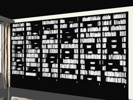
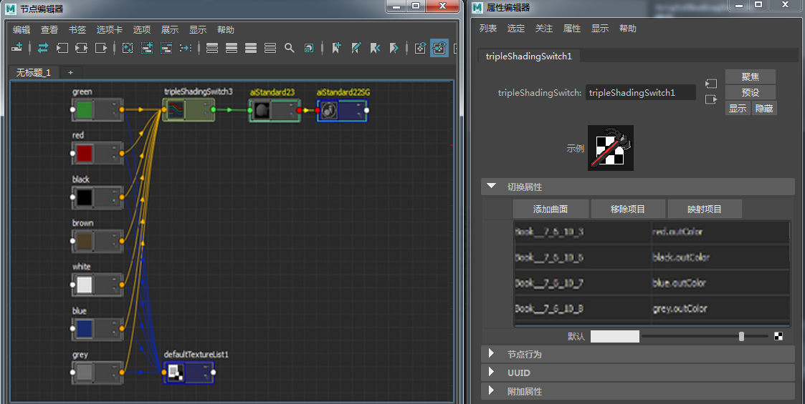
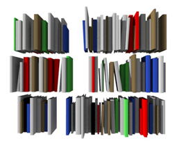

当您有一个场景，而该场景有许多对象需要指定不同的纹理时（如装满书的书架），Maya 的 ShadingSwitch 节点可以非常方便地帮您处理这种情况。它让您可以为同一着色器指定不同的纹理，并且因为同一着色器被指定给所有对象，所以在更改着色器属性时可以帮您节省时间。

一个摆满数百本书的书架。是 Maya 着色切换节点的理想应用场合
选择图书几何体并为其指定标准曲面着色器。将一个 Maya 三元值切换节点连接到标准曲面着色器的“颜色”(Color)属性。
选择图书几何体，然后单击三元值切换节点上的“添加曲面”(Add Surfaces)（您可能需要复制属性编辑器选项卡才能执行此操作）。
创建几个不同的彩色渐变，然后将它们分别拖到“输入形状”(In Shape)列中的图书上，该列位于三元值切换节点。这将为不同的图书模型指定不同的颜色。另一种方法是单击“输入三元值”(In Triple)下的一个字段，然后键入要使用的颜色渐变的名称（确保首先已根据渐变的颜色为它们命名）。您可以在视口中使用“着色 > 硬件纹理”(Shading > Hardware Texturing)来检查自己的进度。

使用 Maya 三元值着色切换节点为不同图书模型指定彩色渐变

多个彩色渐变纹理连接到同一标准曲面着色器和一个三元值着色切换节点
另一种为不同图书指定不同颜色的替代方法是使用用户数据节点。